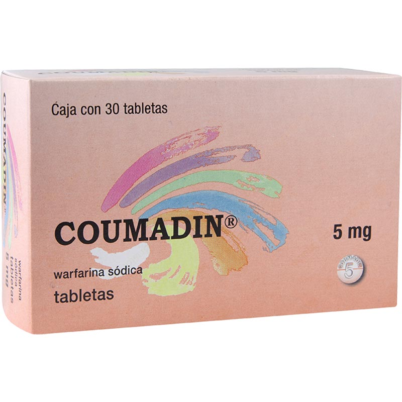

Bloquean la vK epóxido reductasa, impidiendo la activación de los factores de coagulación (II, VII, IX y X), retrasando la formación del coágulo
Tabletas
La warfarina se inicia generalmente con 5-10 mg al día, ajustando la dosis según el INR (valor ideal entre 2.0 y 3.0, o hasta 3.5 si hay válvulas mecánicas). En adultos mayores o con riesgo de sangrado, se comienza con 2-5 mg. La dosis de mantenimiento suele estar entre 2 y 10 mg diarios. El INR se monitorea con frecuencia al inicio y luego cada 2-4 semanas. Puede interactuar con alimentos ricos en vitamina K y otros fármacos. Está contraindicada en el embarazo y siempre debe usarse bajo control médico.
WARFARINA
Potenciadores del efecto:
Disminuyen su efecto:
Warfarina (Marca Coumadin) Acenocumarol (Marca Sintrom)